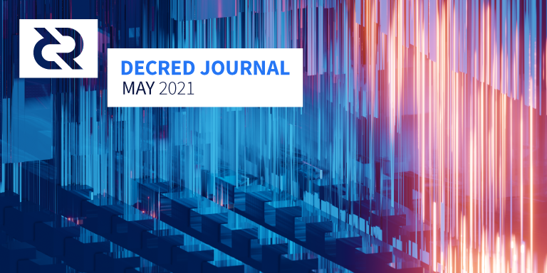
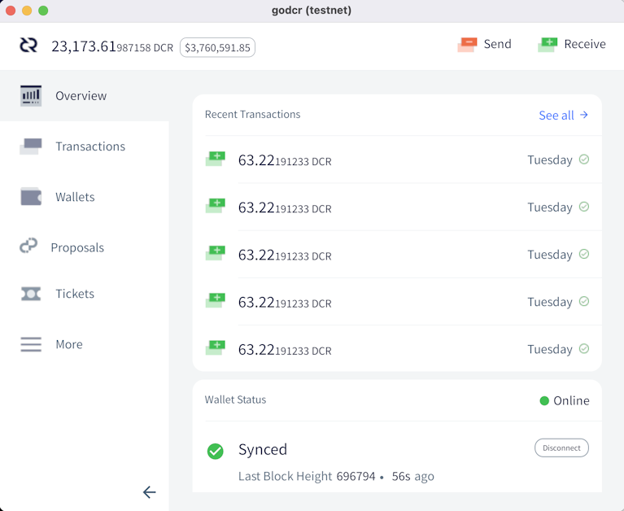

Decred月报 – 2021年5月

图片:@saender
五月亮点：
- 新国库已经开始接收区块奖励，并且已经批准和释放了第一笔交易进行了测试。
- 节点和钱包软件版本 1.6.3 已发布，以修补 VSP 质押的一些问题以及添加了一些最新功能。
- DCRDEX v0.2.0 发布，包含超过 3 个月的工作，并且实验性的将 DCRDEX 集成到 Decrediton v1.6.3中。
内容:
v1.6.3 补丁发布
最新版本的 GUI 钱包 Decrediton 修复了 VSP 质押问题，并集成了新版本的DCRDEX。命令行 dcrwallet 也随着 VSP 修复和改进而更新。
Decrediton 用户请注意：
- DEX 选项卡仅在全节点模式下显示，在 SPV 模式下隐藏
- 需要运行 Bitcoin Core 并使其完全同步才能使用 DEX
- Windows版本已更新以修复默认比特币目录的错误，如果您在 5 月 25 日之前获得安装程序，请重新下载并重新安装
请在此处查看完整的发行说明和下载。与往常一样，请验证程序签名以确保你运行的是未被篡改的二进制文件。
新国库启动
新共识规则于 5 月 8 日启动。从区块552,448开始，10% 的区块奖励流向新的国库账户，不再流向旧地址。
主要区别在于新国库账户由 Decred 利益相关者控制。来自旧地址的支出只需要由 Decred Holdings Group LLC（“DHG”）签署交易，这是一家为引导 Decred 而创建的传统公司实体。新国库只有当利益相关者投票批准一项特殊的“国库支出”交易（“tspend”）时，支出才有可能。
Decred Change Proposal 6 （Decred共识变更DCP） 中指定了一个复杂的投票过程来支持它，并在软件版本 v1.6 中实现。简单来说的步骤是：
- Politeia 创建符合某些要求的 tspend 交易
- 交易被发布到内存池，投票钱包开始对其进行投票
- 投票最多持续 12 天，但如果结果无法被任何剩余投票改变，则可以在大约 7 天内通过
- 在此期间被召集最多 17,280 张票可以进行 tspend 投票（以及正常的区块批准和共识升级投票）
- 如果投票通过，交易将被包含在一个区块中（最多1天后），并支付给承包商
新的国库系统在激活后很快就在主网上成功测试。5 月 10 日，利益相关者被通知配置他们的投票钱包。然后在 5 月 12 日，一个小的测试 tspend 交易被广播到网络。最近的投票窗口是 5 月 13 日至 24 日，但在 9 天内累积 6,755 票赞成和 1 票反对后，投票支付。在此期间有机会投票的 12,550 张选票中，54% 的人积极投票。tspend 是在区块556,416中开采的。
从软件版本 v1.6.3 开始，tspend 投票仅支持 24/7 全天候运行投票钱包的“solo投票者”（截至 6 月 1 日，约占所有利益相关者的 77%）。
国库支出投票将成为支付构建 Decred 人员的重要月度流程。建议solo选民通过使用以下命令配置他们的投票钱包来为即将到来的 tspend 投票做准备：
dcrctl --wallet settreasurypolicy "03f6e7041f1cf51ee10e0a01cd2b0385ce3cd9debaabb2296f7e9dee9329da946c" "yes or no"
此命令表示您对当前03f6e704...资金管理及其密钥的信任，并设置您的钱包将投票支持由其签名的 tspend。您可以在DCP-0006或源代码中验证此密钥。通过这种一次性配置，投票是半自动的，但是当需要更精细的控制时，可以对单个 tspend 交易进行投票。
祝贺所有拥有这一里程碑的利益相关者，并感谢所有贡献者使其成为现实！
开发进展总结
除非另有说明，否则此处报告的工作仅限为“合并到主核心存储库”状态。这意味着这项工作已经完成、审查并集成到高级用户可以构建和运行的源代码中，但对于普通用户来说，还不能使用。
- 将用于处理签名标准脚本的代码移动到其自己的子代码中，以便为将来将标准脚本处理与共识关键代码分开做准备
- 更新了 OpenBSD rc 脚本
- 重新设计应用程序版本处理以从单个字符串解析它，这更易于管理且更防错
- 收到SIGHUP信号时执行正常关机
- 将脚本版本添加到gettxoutRPC的结果中。将来引入新版本时，脚本版本将变得更加重要。
- 在 UTXO 数据库之前将块数据库刷新到磁盘，以确保后者在非正常关机后可以恢复
- 重新设计UTXO相关逻辑以更好地分离关注点。这使得流程更容易遵循，并为优化 UTXO 数据库铺平了道路。
合并在 master 和 v1.6.3 版本中：
- 改进了用于创建额外拆分交易的方法，以修复购买选票时的余额不足错误
- 修复了支付 VSP 费用时的输入选择，解决了两个错误：一个是未使用预期输入并可能保持锁定状态，另一个是 VSP 费用可能从错误的帐户中支付，这可能会降低混币钱包的隐私性
- 确保预期的钱包帐户用于支付 VSP 费用并在同步失败的 VSP 选票时接收找零
- 多个修复程序，用于跟踪有关费用支付安排、错误处理、撤销和过期费用交易的 VSP 管理的选票
- 确保没有重复的费用支付，并且所有费用都由 VSP 客户端跟踪
- 收到SIGHUP信号时执行正常关机
- 添加了一个新的 gRPC 端点，用于公开VSP 客户端跟踪的选票和费用（由 Decrediton 使用）
合并到 master:
- 已实现的
gettxout方法返回有关未花费交易输出的信息，这是 DCRDEX 在SPV 模式下操作 DCR 钱包所必需的 - 实现cfilters(紧凑块过滤器)。这些类似于 dcrd 的实现，并且还使 DCRDEX 能够在 SPV 模式下管理 DCR。
合并在 master 和 v1.6.3 版本中：
- 允许在隐私钱包中的账户之间发送资金（混合账户除外）
- 仅在需要时显示“处理托管选票”视图
- 修复了启动时显示的空白页面而不是加载栏
- 修复了错误的密码短语，允许跳过帐户安全迁移
- 固定钱包帐户锁定以防止锁定正在处理 VSP 选票的帐户，但也锁定任何不再需要解锁的帐户
- 始终使用 Lodash 进行类型检查
- 修复了当自动购票处于隐私模式时未解锁的未混合和更改帐户
- 修复了 Windows 上的默认比特币目录
合并到 master:

在对新存储后端和新 API 进行大规模升级后，大部分工作都致力于更新 UI 代码、测试和修复错误。
- 更新了关于Politeia副本
- 将提案令牌放入电子邮件通知主题
- 在整个 UI 代码库中始终如一地处理简短的提案令牌
- 修复了多条评论相关的 UI 错误
- 修复了初始 UI 加载期间的闪烁
- ~2 个其它后端和 ~14 个 UI 错误修复
- 修复了单元测试和端到端测试以使用新的后端 API
- 依赖升级、代码清理、API 增强
承包商管理系统（CMS）：
- 将发票同行评审可见性从基于作者的域更改为基于发票的行项目域。这将允许承包商审查其域中的所有计费工作，即使它来自其它域的承包商。当前的领域是开发、研究、设计和营销。
- 添加了更多电子邮件通知：“一旦国库的支出完全自动化，及时提交发票将变得更加重要，因此需要进一步唠叨。”
- 文档更新和代码清理
- ~4 个后端和 ~1 个 UI 错误修复
Politeia v1.0.1 已发布，包括上述所有后端修复和改进。
现在可以在里程碑页面上跟踪 v1.1.0 的进度。
- 将选票和费用交易的区块浏览器链接添加到 UI
- 为状态响应添加了最佳块高度（用于检测停滞的 VSP）
- 为所有已确认的选票填充购买高度并将其显示在管理页面上
- 改进的管理页面视觉效果
- 添加了数据库升级框架
- 从请求处理失败中恢复时改进日志记录
- 添加了最大日志大小和最大日志文件的配置参数以保留
- 从数据库中删除确认的费用交易，将磁盘使用量减少约 2 倍
- 将每张票存储在其自己的数据库存储桶中。结合之前的优化，它允许将大约 40% 的磁盘使用率提高大约 50% 的插入速度和大约 85% 的票证迭代速度。
- 修复了 dcrstakepool（旧版 VSP 软件）和 dcrwallet v1.6.3 在一些罕见配置中的不兼容问题
- 不要尝试使用比预期新的数据库版本运行
- 处理
SIGTERM和SIGHUP关闭信号
第三个 v1.2.0 发布候选修复了自 RC2 以来发现的问题，但 coinbase 确认失败仍未解决。当团队正在探索解决方案时，发布被推迟到另行通知。
DCRDEX v0.2.0 已经发布！它包含了自 v0.1.5 发布以来超过 3 个月的工作。最显着的变化是：
- UI 和可用性增强，包括响应式设计和交互式深度图
- 支持 Decrediton 的客户控制及其账户的使用
- 帐户导入/导出
- 比特币现金 (BCH) 支持
查看重要通知和发行说明中的完整更改列表。在DEX页面通过简化安装步骤指南。更高级的用户可以在此处获取二进制文件并手动安装它们。不要忘记验证下载以确保它们未被篡改。
合并到 master:
许多朝着0.3 里程碑迈进的工作正在进行中，最重要的是以太坊和SPV。
- 禁止从非混合帐户发送
- 添加密码输入延迟以抵抗暴力攻击
- 在概览页面显示质押相关交易
- 更新依赖项并用“StakeShuffle”替换“CoinShuffle++”
- 保持显示直到混合完成或取消
- 显示Politeia 提案的富文本格式（不使用 WebView）
- 更新了中文和法语翻译
- 修复观察钱包列出发送资金
合并到 dcrlibwallet:
- 添加了用于获取提案描述的代码，并从保存提案文件切换为按需加载
- 为cspp.decred.org集成了一个签名的 TLS 证书，这是使用主网时所必需的
- 修复了平衡和 Politeia 集成的错误
- 通过混币器的引导设置实施隐私模式
- 在概览页面上显示钱包的 DCR 余额等值的美元
- 添加密码输入延迟以抵抗暴力攻击
- 当概览页面有多个钱包时，显示交易属于哪个钱包
- 显示更具体的质押交易通知（票已投票或撤销）
- 显示Politeia 提案的富文本格式（不使用 UIWebView）
- 添加了对 iOS 11 的支持
- ~17 个错误修复和 UI 调整
- 实现的页面：选票概览、选票列表和恢复钱包
- 实现了Max按钮，用于设置可以发送的最大 DCR 数量
- 添加了按Enter提交输入字段的功能
- 向一些模态添加了加载动画
- 初始暗模式支持
- 添加语言翻译基础设施
- ~14 个错误修复
Elias Naur（为 Godcr 提供支持的 Gio 库的创建者）友好地审查了 UI 代码并分享了他的建议。问题是为了解决这些问题而创建的，有些问题已经完成（例如#409, #411, #416）。

- 新
/treasury页面的初始版本 - 在mempool页面上显示资金支出交易，在投票交易页面上显示 tspend Yes/No 投票，在 tspend 自己的交易页面上进行投票统计
- 添加了一个更简单的端点来查询汇率
- 将混合币的份额添加到主页（在Distribution下）
其它:
- 漏洞赏金计划更新：目前共处理了 180 份提交，其中 16 份符合支付条件
- 一个轻量级的 Jekyll主题配置被提取到它自己的 repo 中以供重用。它允许在没有第三方跟踪脚本的情况下发布一些 Markdown 页面。您可以在活动、提案和社交媒体统计项目的迷你网站上看到它的作用。
- 翻译需要持续维护。加入#translations聊天室，与其它翻译和开发人员进行协调。
人员
欢迎到来首次贡献者，他们的代码已合并到主存储库中： @LasTshaMAN (politeia)!
截至 6 月 1 日的社区统计数据：
- Twitter 粉丝: 45,724 (+1,333)
- Reddit 订阅s: 11,190 (+203)
- Matrix #general 用户: 467 (+33)
- Discord 用户: 1,787 (+221)
- Telegram 用户: 2,705 (+60)
- YouTube 订阅: 4,540 (+40), 观看: 186K (+4K)
- GitHub dcrd 星: 598 (+7), 叉: 255 (+1)
历史社区增长图表已经过调整、更新，并移至此处的新位置。
治理
5月，Decred 国库收到了 11,342 DCR（旧地址为2,564 ，新账户为8,778 ），价值 197 万美元，5 月份的平均汇率为 173.47 美元。5 月份没有花费 DCR。6 月 2 日，698 DCR 从旧地址用于 4 月发票，按 5 月的费率计算价值 121,000 美元，或按 4 月的结算费率 198.60 美元计算价值 139,000 美元。截至 6 月 3 日，合并的国库余额为 683,438 DCR（1.07 亿美元，合 156 美元）。
5 月份提交并通过了 1 个提案，Politeia 的持续发展提案（上月详述）获得了 98.4% 的批准和 44% 的投票率。
在checkonchain.com上添加了国库图表，以协助围绕费用进行治理决策。
网络
全网算力: 5 月份算力为~418 Ph/s开始，结束为~351 Ph/s，全月最低为234 Ph/s，最高为497 Ph/s。
12 月至 4 月的价格从约 25 美元上涨至约 200 美元与算力从约 350 上涨至 450-550 Ph/s 之间似乎存在相关性。然后在相反的方向上，4 月 17 日至 23 日的价格调整发生在算力从 ~450 下降到 ~250 Ph/s 的过程中。最近，5 月 10 日至 23 日算力下降与价格从约 200 美元跌至约 110 美元相关。
6 月 1 日矿池报告的算力分布：Poolin矿池 39%，F2Pool 17%，蚂蚁矿池 3%，BTC.com 1.6%，卢克索 1.3%，火币矿池 0.4%，UUPool 0.1%，Coinmine 0.05%，okex 0.01%，其他38%。
1,000 个实际开采区块的分布几乎与报告的哈希率相符。未识别的开采块被分成 4 个地址：Dsacz 25%, DsR4G 7%, DsbNN 4%, 和 DsaWD 0.2%。
Staking: 票价173-198 DCR之间变化，具有30天的平均在183.7 DCR（-2.1）。
锁定量为7.39-7.62亿DCR，这意味着循环供应的57.2-58.7％参加PoS。
VSP: 6 月 1 日，8.2K (+1.1K) 现场票由 vspd 服务器管理，1.1K (-1.1K) 由仍在列出的旧版 dcrstakepool 服务器管理。12 个传统 VSP 和 13 个新 VSP 总共管理着 22.5% 的票池。最近退市但仍然活跃的旧版 VSP 管理着 61 张现场门票。
5 月 14 日，发现 4 个传统 VSP 没有升级到新的共识规则，并于 5 月 8 日从网络中分叉，同时持有约 350 张客户的票。除了一个之外，其他所有人最终都升级，而stakepool.dcrstats.com更改为维护模式并停止报告统计信息。截至 6 月 8 日，其 77 张现场门票的状态尚不清楚。
Nodes: 根据dcrextdata，整个 5 月大约有 215 个可访问节点。
截至 6 月 1 日快照的节点版本（共 252 个，仅 dcrd）：v1.6.2 - 42%、v1.6.0 - 21%、v1.6.1 - 17%、v1.7 dev builds - 8%、v1.6 dev builds 4%，v1.5.2 - 3%，v1.5.1 - 2.7%，v1.5.0 - 0.8%。
生态系统
欢迎新vspd实例123.dcr.rocks来自@thefrankbraun。服务费为 0.49%，投票钱包位于两大洲的 3 个数据中心。自 5 月 1 日上市以来，截至 6 月 8 日，该服务已投票约 430 张票并管理约 650 张现场票。
旧版 VSP dcrpool.dittrex.com已从列表中删除，但仍在在线观看其最后 1 个现场门票。自2018年11 月以来，该服务已对 800 多张票进行了投票。来自 Dittrex 的替换 vspd 实例已启动，等待其第一个投票票被添加到列表中。
并非所有交易所都顺利处理了 Decred 的第 6 次共识升级：
- 币安已提前升级，分叉发生时未受影响
- Bittrex 卡在第552,447个区块——最后一个区块遵守旧的共识规则。他们的状态页面报告说 DCR 钱包被禁用，并且在“钱包维护”下，在 5 月 13 日左右更改为“正常”。
- Poloniex发推文称他们的 DCR 钱包因“维护”而被禁用（共识升级后约 4 小时），并于 5 月 21 日再次发推文称已重新启用
自 5 月 17 日左右以来，Ledger Live 用户一直在报告同步和发送 DCR 的问题。Ledger事件页面上的最新更新称，该修复程序已在 5 月 20 日进行测试，但他们 6 月 3 日的推文 证实该问题仍未解决。截至 6 月 8 日，状态页面报告 DCR 中断，并且在过去 90 天内正常运行时间为 75%。
以下服务已从decred.org 中删除：
- instaex.io - 网站已关闭
- fexpro.net - 证书错误
- changenow.io - DCR 交易对3 个月以上不可用
- transak.com - 似乎不再支持购买 DCR
MarketplaceGOLD 编制了一份全球接受 DCR 的商家名单，并在 r/decred 上公布。
警告：Decred 月报的作者不知道上述任何服务的可信度。在将您的个人信息或资产信任给任何实体之前，请自行研究。
加入我们的#services聊天室，关注 Decred 生态系统更新。
外展
Monde PR 五月份的成绩：
- 向金融和加密出版物投放了 2 个故事
- 回应了 12 项评论/公关机会请求
- 获得2次媒体采访
Monde PR 新闻报道：
- Brave New Coin 上的一篇文章，介绍了去中心化国库激活的新闻
- CoinDesk 上的一篇文章，其中评论了@lukebp 关于他在 Consensus 的经历。这篇文章被联合给Yahoo! Finance
- DCRDEX 整合公告由Bankless Times和Crowdfund Insider报道。Crowdfund Insider 文章被联合给Crypto News BTC, MCC Exchange 和 MoneyNow。CryptoNEXA, CriptoNoticias 和 Crypto News也报道了该公告。加密新闻文章被联合到IQ Stock Market。
媒体
精选文章：
- Big Tech on steroids: 为什么 2020 年代将成为“DAO 的十年” 作者：Dominic Frisby (MoneyWeek)
- Thinking Out Loud #2: @PermabullNino Decred图表大礼包 (substack.com)
视频:
- 有限的货币供应 - Decred Fundamentals 来自 @phoenixgreen (youtube)
- 为什么治理很重要 - Decred Fundamentals 来自 @phoenixgreen (youtube)
- Decred 双周报 - 价值 1.5 亿美元的利益相关者驱动的 DAO 现已上线，DCRDEX 进入钱包，v1.6.2 及更多 @Exitus (youtube)
- 为什么这将是 DAO 的十年 - Dominic Frisby (youtube)
- Decred 价格分析 - Josh Olszewicz (youtube)
- 与 Jake Yocom-Piatt 讨论 Decred Dominic Frisby (youtube) - @jy-p 暗示用后量子加密升级混合技术
艺术与娱乐：
- 游戏被操纵 - 革命不会集中 @karamble (twitter)
- 乐高Stakey 由年轻的 hodlers 制作
- @jz 一直忙于#RealDecredMemes标签：chart/menu, freedom eagle, levels of voter enlightenment, shower thoughts
翻译:
- Decred 4月报被翻译成阿拉伯语（@arij、@abdulrahman4）和中文（@Dominic）。谢谢你们！
其它非英语内容：
- Decred的新国库覆盖CriptoNoticias
- 看起来@Dominic 秘密运行了一个新的中文版 Decred 播客，已经发布了 3 集：首先是一位匿名硬件工程师关于社区中的事件，其次是与 decreder 讨论进行治理，第三是 Mable Jiang 的 51% 播客（@Dominic 所在的位置）最近有客人）

讨论
选定的 Reddit 主题：
选定的 Twitter 讨论：
- @lukebp 和 @BuckPerley 之间关于正式与非正式治理的长期辩论
Decred DAO 为整个加密领域实现了一个新的里程碑：数字主权财富基金。
Decred 网络是最接近数字国家状态的网络。
第 1 层的DAO，有自己的金库、自己的交易所、自己的货币和自己的钱包。 (@ammarooni)


还要有自己的蛋糕！
市场
5 月 DCR 的交易价格在 90.4-229.4 美元 / BTC 0.0027-0.0047 之间。平均每日价格为 173.47 美元。
@PermabullNino 发布了一个"图表狂欢"，其中包含许多 Decred 独有的指标和简洁的评论。40 美元和 BTC 0.004 似乎是许多矿工和利益相关者的重要价格。
@Checkmate 更新了checkonchain.com，其中包含跟踪Decred 国库 和 DCRDEX 交易量的新图表。
DCRDEX 5月交易量为383K DCR和1.4K BTC，日均交易量为12K DCR和46 BTC。
相关外部信息
比特币上的 Taproot 激活信号已达到超过 90% 的水平（截至 6 月初约为 97%），并且将在当前信号窗口结束时锁定在 6 月的某个时间。
据报道，伊朗中央银行已禁止“在国外开采”的加密货币交易，以阻止资本外逃。伊朗企业仍然可以从注册的伊朗矿工那里获得加密货币，用于国际支付。
比特币矿池 Marathon Mining开采了一个区块，该区块被描述为“完全符合美国法规”，审查了其认为受到美国财政部制裁或参与暗网活动的实体的交易。尽管他们付出了努力，但还是有一些暗网市场交易进入了这个区块，这旨在成为比特币审查的里程碑。
在 Elon Musk 批评比特币的环境特性并且特斯拉停止接受它作为支付之后，他与 Michael Saylor 等人一起推动了一个新的“比特币矿业委员会，以促进能源使用透明度并加速全球可持续发展计划”。
Ark 的 Cathie Wood在 Consensus 上还表示，对比特币的 ESG（环境社会和治理）担忧意味着“许多机构购买暂停”，并认为 Elon Musk 在这场运动中发挥了作用。
该PoolTogether DAO，与池一起彩票和控制所有POOL令牌超过50％的关联，已投来分散出售的所有POOL令牌，目前由DAO控制的5.38％的持股，以选择风险投资的协议金额700 万美元。VC 购买的 POOL 代币将有 1 年的锁定期，之后的归属期为 1 年。
这是DAO最近实现资产多元化的明显趋势的一部分。
5 月份以太坊闪贷失败的最大受害者是 xToken，攻击者在同一笔交易中利用了两个不同合约中的漏洞，在支付 21,900 美元的交易费以获得闪贷后净赚2450 万美元。
Binance Smart Chain 现在在 DeFi 垃圾箱火灾赌注中为以太坊提供竞争，在 BUNNY 代币因经济剥削而遭受名义上 2 亿美元的错误印刷代币之后，你猜对了，闪电贷款。
Coinbase 正在扩大其职权范围，也成为一家媒体公司，通过其营销部门批准的“事实核查”类型的内容直接面向受众。
这就是五月的全部。在我们解密的#journal聊天中分享您下一期的故事。
关于月报
这是Decred Journal的第38期。有关所有问题，镜像和翻译的索引，请参见这里。
在经过最少的健全性检查之后，来自第三方的大多数信息都会直接从来源中继。Decred Journal的作者无权验证所有声明。请当心诈骗，并自行进行调查。
您可以在此处提交内容，以供撰写下一期月报内容。我们随时欢迎您的反馈和贡献。
感谢 (字母排列):
- 写作和编辑: bee, degeri, l1ndseymm, richardred
- 评论和反馈: chappjc, davecgh, dnldd, jholdstock, karamble, lukebp, matheusd, oshorefueled
- 封面图片: saender
- 资助: Decred stakeholders
中文社区
- 社区网址
- 微博
- 微信公众号
- 中文电报群
- bilibili频道
- QQ群号-258412796